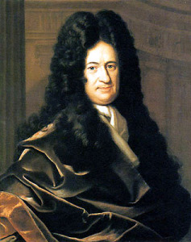

Prehistoria: Los primeros seres humanos observaron los fenómenos naturales y buscaron explicaciones para ellos.
Civilizaciones Antiguas: Los egipcios, babilonios, griegos y otros, desarrollaron sus propias ideas sobre la naturaleza del mundo, con enfoques filosóficos y matemáticos.
EDAD Y RENACIMIENTO:
Aristóteles y Ptolomeo: Las teorías aristotélicas dominaron el pensamiento científico durante mucho tiempo.
Galileo Galilei: Pionero en el uso del método científico y en la formulación de leyes sobre el movimiento y la gravedad.
Johannes Kepler: Desarrolló leyes precisas sobre el movimiento planetario.
Isaac Newton: Su obra "Principia Mathematica" estableció las leyes del movimiento y la ley de la gravitación universal.
SIGLO XIX:
Electricidad y Magnetismo: Experimentos de científicos como Michael Faraday y James Clerk Maxwell dieron lugar a las leyes de la electricidad y el magnetismo.
Termodinámica: Desarrollo de las leyes de la termodinámica, que gobiernan los procesos de transferencia de calor y la conversión de energía.
SIGLO XX:
Teoría de la Relatividad: Albert Einstein formuló la teoría de la relatividad especial y general, revolucionando nuestra comprensión del tiempo, el espacio y la gravedad.
Mecánica Cuántica: Surgió para explicar el comportamiento de partículas subatómicas, con contribuciones fundamentales de científicos como Max Planck, Niels Bohr y Werner Heisenberg.
ACTUALIDAD:
Física de Partículas: El Gran Colisionador de Hadrones (LHC) y otros experimentos buscan comprender las partículas fundamentales y las fuerzas que gobiernan el universo.
Cosmología: Estudio del origen, evolución y destino del universo, con teorías como la del Big Bang.
Interdisciplinariedad: La física se entrelaza con otras disciplinas como la biología, la informática y la ingeniería, dando lugar a campos como la biofísica y la física médica.
INVENTORES DE LA FISICA:
La física moderna comienza a principios del siglo XX, cuando el alemán Max Planck, investiga sobre el “cuanto” de energía,Planck decía que eran partículas de energía indivisibles, y que éstas no eran continuas como lo decía la física clásica, por ello nace esta nueva rama de la física que estudia las manifestaciones que se producen en los átomos, los comportamientos de las partículas que forman la materia y las fuerzas que las rigen. (También se le llama física cuántica).

En 1905, Albert Einstein, publicó una serie de trabajos que revolucionaron la física, principalmente representados por “La dualidad onda-partícula de la luz” y “La teoría de la relatividad” entre otros. Estos y los avances científicos como el descubrimiento de la existencia de otras galaxias, la superconductividad, el estudio del núcleo del átomo, y otros, permitieron lograr que años más tarde surgieran avances tecnológicos, como la invención del televisor, los rayos x, el radar, fibra óptica, el computador etc.